Referencia:
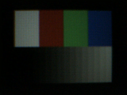
1 SEN_RATE = 00, MCK_SIZE 2 (24/2 = 12 MHz)b:0x17=0x60,b:0x19=0x20ok fps=14.4 brilho=46.96 | 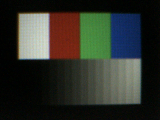 |
2 SEN_RATE = 00, MCK_SIZE 3 (8 MHz)b:0x17=0x60,b:0x19=0x30ok fps=9.7 brilho=69.85 | 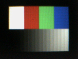 |
3 SEN_RATE = 00, MCK_SIZE 4 (6 MHz)b:0x17=0x60,b:0x19=0x40ok fps=7.2 brilho=86.73 | |
4 SEN_RATE = 00, MCK_SIZE 5 (4,8 MHz; Risolia em cru)b:0x17=0x60,b:0x19=0x50ok fps=5.8 brilho=98.22 | 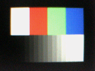 |
5 SEN_RATE = 00, MCK_SIZE 8 (3 MHz)b:0x17=0x60,b:0x19=0x80ok fps=3.6 brilho=121.75 | 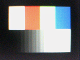 |
6 SEN_RATE = 00, MCK_SIZE 15 (1,6 MHz)b:0x17=0x60,b:0x19=0xf0ok fps=1.9 brilho=160.81 | 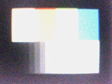 |
7 12 MHz pelo SEN_RATE = 01b:0x17=0x64ok fps=14.4 brilho=45.63 | |
8 SYNC_OUT + PCK_OUT (0x19 = 0x23)b:0x19=0x23ok fps=38.7 brilho=58.19 | |
9 SYNC_OUT + PCK_OUT + PCK_2X (0x19 = 0x2b)b:0x19=0x2bok fps=19.7 brilho=33.75 | 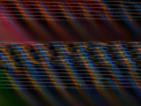 |
10 PCK_OUT + PCK_2X sem SYNC_OUT (0x19 = 0x2a)b:0x19=0x2aok fps=29.8 brilho=61.65 | 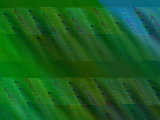 |
11 original do gspca: 0x17 = 0x6c (48 MHz), 0x19 = 0x2bb:0x17=0x6c,b:0x19=0x2bok fps=19.7 brilho=23.52 | 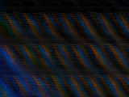 |
12 original com 24 MHz: 0x17 = 0x68, 0x19 = 0x2b, sensor 0x11 = 1b:0x19=0x2b,s:0x11=0x01ok fps=19.7 brilho=48.60 | 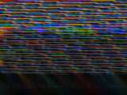 |
13 0x18 bordas: PCK descida (0x9e)b:0x18=0x9eok fps=29.8 brilho=23.61 | 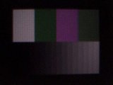 |
14 0x18 bordas: HSYNC descida (0x9d)b:0x18=0x9dok fps=29.8 brilho=20.75 | 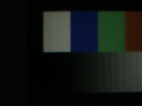 |
15 0x18 bordas: PCK e HSYNC descida (0x9c)b:0x18=0x9cok fps=29.8 brilho=21.72 | 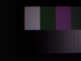 |
16 0x18 VSYNC descida (0x9b)b:0x18=0x9bok fps=29.8 brilho=22.14 | |
17 0x18 VSYNC ativo baixo (0x97)b:0x18=0x97ok fps=28.8 brilho=21.98 |